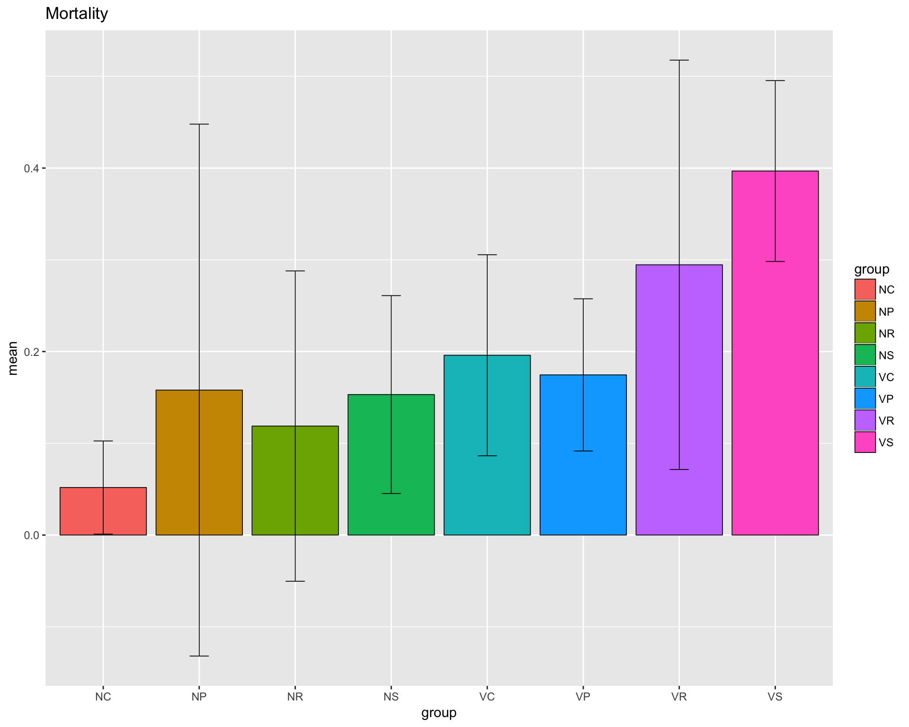

library(edgeR)
library(ggplot2)
library(GGally)
library(EDASeq)
library(utils)
library(dplyr)
rm(list=ls())
thisPath <- "/Users/lindz/bigPint"
beeCounts <- read.delim(file=paste0(thisPath, "/AllLaneCount.txt"), row.names=1, stringsAsFactors = FALSE)
colnames(beeCounts) <- c("NC.1", "NC.2", "NR.1", "VR.1", "NS.1", "VP.1", "NS.2", "VR.2", "NP.1", "VP.2", "VC.1", "NP.2", "VP.3", "NP.3", "VS.1", "VS.2", "VC.2", "NC.3", "VP.4", "NC.4", "NR.2", "VC.3", "VC.4", "NP.4", "VR.3", "NC.5", "VS.3", "NP.5", "VC.5", "VS.4", "NS.3", "VS.5", "VP.5", "NR.3", "NR.4", "VC.6", "NS.4", "NC.6", "NP.6", "VR.4", "NR.5", "NR.6", "NS.5", "VP.6", "NS.6", "VR.5", "VR.6", "VS.6")
beeCounts <- beeCounts[ , order(names(beeCounts))]
x <- DGEList(counts=beeCounts)
exVars <- read.csv("/Users/lindz/bigPint/tblshoot/CheckAllVars/extraVarClean.csv")
x$samples$group <- as.factor(unlist(lapply(colnames(x), function(x) substring(unlist(strsplit(x, "[.]"))[1],1))))
x$samples$virus <- as.factor(unlist(lapply(colnames(x), function(x) substring(unlist(strsplit(x, "[.]"))[1],1,1))))
x$samples$diet <- as.factor(unlist(lapply(colnames(x), function(x) substring(unlist(strsplit(x, "[.]"))[1],2,2))))
x$samples$lane <- exVars$Lane
x$samples$day <- exVars$Day
x$samples$mortality <- exVars$Mortality
x$samples$sbv <- exVars$SBV
x$samples$iapv <- exVars$IAPV
x$samples$rnaConc <- exVars$rnaConc
x$samples$rin <- exVars$RINmortalityDF <- x$samples %>% group_by(group) %>% summarize(mean = mean(mortality), sd = sd(mortality))
ggplot(mortalityDF, aes(x=group, y=mean, fill=group)) + geom_bar(position=position_dodge(), stat="identity", colour="black", size=.3) + geom_errorbar(aes(ymin=mean-sd, ymax=mean+sd), size=.3, width=.2, position=position_dodge(.9)) + ggtitle("Mortality")
sbvDF <- x$samples %>% group_by(group) %>% summarize(mean = mean(sbv), sd = sd(sbv))
ggplot(sbvDF, aes(x=group, y=mean, fill=group)) + geom_bar(position=position_dodge(), stat="identity", colour="black", size=.3) + geom_errorbar(aes(ymin=mean-sd, ymax=mean+sd), size=.3, width=.2, position=position_dodge(.9)) + ggtitle("SBV")iapvDF <- x$samples %>% group_by(group) %>% summarize(mean = mean(iapv), sd = sd(iapv))
ggplot(iapvDF, aes(x=group, y=mean, fill=group)) + geom_bar(position=position_dodge(), stat="identity", colour="black", size=.3) + geom_errorbar(aes(ymin=mean-sd, ymax=mean+sd), size=.3, width=.2, position=position_dodge(.9)) + ggtitle("IAPV")rnaConcDF <- x$samples %>% group_by(group) %>% summarize(mean = mean(rnaConc), sd = sd(rnaConc))
ggplot(rnaConcDF, aes(x=group, y=mean, fill=group)) + geom_bar(position=position_dodge(), stat="identity", colour="black", size=.3) + geom_errorbar(aes(ymin=mean-sd, ymax=mean+sd), size=.3, width=.2, position=position_dodge(.9)) + ggtitle("RNA Concentration")rinDF <- x$samples %>% group_by(group) %>% summarize(mean = mean(rin), sd = sd(rin))
ggplot(rinDF, aes(x=group, y=mean, fill=group)) + geom_bar(position=position_dodge(), stat="identity", colour="black", size=.3) + geom_errorbar(aes(ymin=mean-sd, ymax=mean+sd), size=.3, width=.2, position=position_dodge(.9)) + ggtitle("RIN")